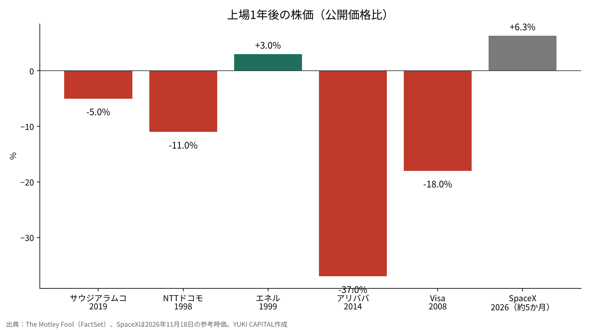
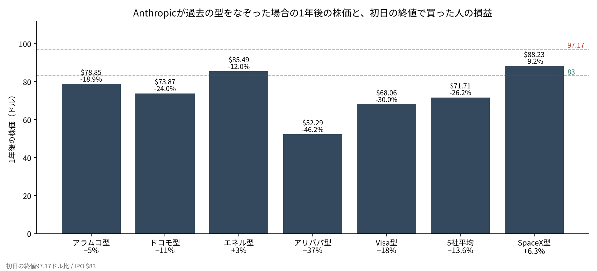

史上最大のIPOは、その後どうなったのか――サウジアラムコ・アリババ・SpaceXの1年後の株価から、Anthropicの公開価格83ドルを検証
Anthropicは2026年11月19日にナスダックで取引を始め、公開価格83ドルに対して初日は17.07%高の97.17ドルをつけた。調達額は約813億ドルで、6月のSpaceXの750億ドルを上回り、米国のIPOで最大になった[3][10]。
大きな上場の初日は、たいてい華やかに見える。しかし、本当に問われるのはその後の1年である。
本稿の問いは、調達額が史上最大級のIPOは上場から1年後に公開価格を上回っていたのか、そして初日の終値で買った人はどうなったのか、である。

- 調達額の上位5社（物価で調整）のうち、上場1年後に公開価格を上回っていたのはエネルの+3%だけで、5社の平均は−13.6%だった。
- SpaceXは公開価格135ドルから約5か月で+6.3%だが、初日の終値160.95ドルからは−10.8%で、初日に買った人は含み損になっている。
- Anthropicが5社の平均をなぞれば1年後は71.71ドルで、初日の終値で買った人は−26.2%になる。公開価格を上回るには、過去のどの型よりも強い1年が要る。
問いと背景
3か月後の勢いも当てにならない。3か月後に上げていた3社のうち、1年後も公開価格の上にいた会社は1社もなかった。
IPO（新規株式公開）とは、会社が初めて株式を市場で売り出し、取引所で売り買いできるようにすることである。公開価格は、売り出しの前に会社と証券会社が決める1株の値段で、初日の取引はこの値段から始まる。
初日に値段が大きく上がることを、研究では「過小値付け（アンダープライシング）」と呼ぶ。会社が受け取るお金は公開価格で決まるため、初日の上昇分は、会社ではなく割り当てを受けた投資家の取り分になる。初日が強いほど、会社は「もっと高く売れた」ことになる。
初値と公開価格の差を「初日の上昇率」と呼ぶ。米国の学術研究では、1980年から2025年までの米国のIPOの初日の上昇率の平均は18.8%と集計されている[1]。Anthropicの17.07%は、この平均とほぼ同じ大きさである。
一方で、IPOの長い目で見た成績は、初日ほど良くない。同じ研究の集計では、IPOの3年間の持ち切りの成績は、同じ規模の上場会社と比べて平均で下回ってきた[2]。初日に買えた人と、初日の値段で買った人とでは、見える景色が違う。
大きなIPOほど、売り出しの前に注目が集まる。期待が値段に先に入ると、その後の1年は期待と実際の差を埋める時間になりやすい。
2026年は、史上最大のIPOが半年の間に2回あった年になった。6月のSpaceX（調達額750億ドル）と、11月のAnthropic（約813億ドル）である[3][9]。これまでの最大だったサウジアラムコ（2019年・256億ドル）の約3倍の大きさになる[8]。
データと方法
比べる対象は、物価で調整した調達額で史上の上位5社とした。サウジアラムコ（2019年）、NTTドコモ（1998年）、エネル（1999年）、アリババ（2014年）、Visa（2008年）である。2026年の価値に直すと、調達額はそれぞれ380億ドル・370億ドル・370億ドル・350億ドル・280億ドルになる[7]。
株価の成績は、公開価格から上場1年後の終値までの値上がり率を使う。株式分割は調整済みで、出典は FactSet のデータを集めた The Motley Fool の表である[7]。公開価格そのものは、各社の目論見書（424B4）で確かめられる[4][5][6]。
SpaceXは上場から1年たっていないため、2026年11月18日の参考時価143.5ドルを「約5か月後」として並べた[11]。公開価格は135ドル、初日の終値は160.95ドルである[9]。Anthropicは初日の97.17ドルを起点にした[10]。
推定の方法は単純である。Anthropicの公開価格83ドルに、過去の5社それぞれの1年後の値上がり率を掛け、1年後の株価の目安を出す。そのうえで、初日の終値97.17ドルで買った人の損益を計算する。
結果
上位5社の1年後の成績を、下の表にまとめた。
| 会社 | 上場 | 調達額（2026年ドル） | 3か月後 | 1年後 |
|---|---|---|---|---|
| サウジアラムコ | 2019年 | 380億ドル | −21% | −5% |
| NTTドコモ | 1998年 | 370億ドル | +19% | −11% |
| エネル | 1999年 | 370億ドル | −5% | +3% |
| アリババ | 2014年 | 350億ドル | +20% | −37% |
| Visa | 2008年 | 280億ドル | +14% | −18% |

5社のうち、1年後に公開価格を上回っていたのはエネルの+3%だけだった。残りの4社は下回り、5社の平均は−13.6%、真ん中の値は−11%である。アリババは3か月後に+20%だったが、1年後には−37%まで下げた[7]。
上位5社には入らないが、2012年のフェイスブック（調達額160億ドル）も同じ形をたどった。公開価格38ドルからの3か月で47%下げ、初日に買った人は1年で約3分の1を失った[8]。2018年のソフトバンク（通信会社）は、初日から15%下げて始まった[8]。
3か月後に上回っていた会社が、1年後も上回っているとは限らない。ドコモとアリババとVisaは3か月後には上げていたが、3社とも1年後には公開価格を割っていた[7]。初めの数か月の勢いは、1年後の成績をほとんど教えてくれない。
SpaceXは約5か月で公開価格から+6.3%にいる。ただし、初日の終値160.95ドルからは−10.8%で、初日の値段で買った人は含み損を抱えている[9][11]。公開価格で割り当てを受けた人と、初日に市場で買った人の差は、ここでも出ている。
感度分析
Anthropicが過去の型のどれをなぞるかで、1年後の姿がどれだけ変わるかを確かめた。公開価格83ドルに、各社の1年後の値上がり率を当てはめた。

| なぞる型 | 1年後の値上がり率 | 1年後の株価 | 初日の終値で買った人 |
|---|---|---|---|
| エネル型 | +3% | 85.49ドル | −12.0% |
| SpaceX型（約5か月） | +6.3% | 88.23ドル | −9.2% |
| アラムコ型 | −5% | 78.85ドル | −18.9% |
| ドコモ型 | −11% | 73.87ドル | −24.0% |
| 5社平均 | −13.6% | 71.71ドル | −26.2% |
| Visa型 | −18% | 68.06ドル | −30.0% |
| アリババ型 | −37% | 52.29ドル | −46.2% |
いちばん良いエネル型でも、初日の終値で買った人は1年後に−12.0%になる。いちばん悪いアリババ型では52.29ドルまで下がり、初日の買い手は半分近くを失う計算になる。
初日の終値で買った人が1年後に損をしないためには、公開価格から+17.07%以上の値上がりが要る。過去の上位5社に、1年後にこの線を超えた会社は1社もない[7]。
考察
反対の見方もある。調達額の大きさは、その後の成績とあまり関係がないという指摘である。長い目で見ると、Visaは公開価格から1,912%、アリババも48%上がっており、成績を分けたのは業種と事業の強さだったとされる[7][8]。
実際、エネルギーや通信の会社は伸び悩み、金融とテクノロジーの会社は5年後には大きく値を上げていた[8]。AnthropicはAIの会社で、過去の5社のどれとも業種が違う。過去の型を当てはめること自体に、限界がある。
専門家の助言として、上場直後の値動きに耐え、会社が決算を何度か出した後に改めて評価し直すのがよいという声もある[8]。ロックアップが解けて株の量が増え、決算で実際の数字が見えてから、値段が落ち着くという考え方である。
本稿の限界は3つある。1つ目は、比べた会社が5社しかなく、偶然の影響を除けないこと。2つ目は、1年後の成績に、上場の後の相場全体の動きが混ざっていること。3つ目は、配当や為替を含めた成績ではないことである。
答え合わせの基準は2つある。2027年11月19日のAnthropicの終値が、83ドルと97.17ドルのどちらの上にあるか。そして、ロックアップ（大株主の売り制限）が解ける日の前後で、株価がどう動くかである。
結論
調達額が史上最大級のIPOは、1年後に公開価格を上回るとは限らない。上位5社では5社中4社が下回り、平均は−13.6%だった。
とくに初日の終値で買った人には厳しい。Anthropicが過去のどの型をなぞっても、初日の97.17ドルで買った人は1年後に損をしている計算になる。
大きな上場を見るときは、初日の上昇率と1年後の成績を分けて見る必要がある。初日の17%は、会社の価値というより、売り出しの値段の付け方を映している面が大きい。
大きな上場は、時間を味方にできる人のための出来事である。1年の成績が悪くても、10年で見れば勝った会社もある。どの時間軸で持つのかを、買う前に決めておくことが大事になる。
僕はこう見ている
僕はAnthropicを、上場したら10年20年持つ会社として見てきた。個人の口座ではすでに買い付けを済ませたが、YUKI CAPITALで公開している口座では、まだ1株も買っていない。
公開している口座で買う条件は、公開価格の83ドルを割ったときに500株からと決めている。今回の検証で、大きな上場は1年の間に公開価格を割る局面が出やすいと確かめられた。だから僕は、初日の熱には乗らず、その線まで待つ。
参考文献
- Jay R. Ritter, University of Florida「Initial Public Offerings: Updated Statistics」（2026年1月） https://site.warrington.ufl.edu/ritter/files/IPO-Statistics.pdf
- Jay R. Ritter「IPOs: Long-run Returns」（2025年） https://site.warrington.ufl.edu/ritter/files/IPOs-long-run-returns-on-IPOs.pdf
- Anthropic「Anthropic prices initial public offering」（2026年11月18日） https://www.anthropic.com/news/anthropic-prices-initial-public-offering
- U.S. SEC EDGAR「Alibaba Group Holding（CIK 1577552）の目論見書 424B4」（2014年9月） https://www.sec.gov/cgi-bin/browse-edgar?action=getcompany&CIK=0001577552&type=424B4
- U.S. SEC EDGAR「Facebook, Inc.（CIK 1326801）の目論見書 424B4」（2012年5月） https://www.sec.gov/cgi-bin/browse-edgar?action=getcompany&CIK=0001326801&type=424B4
- U.S. SEC EDGAR「Visa Inc.（CIK 1403161）の目論見書 424B4」（2008年3月） https://www.sec.gov/cgi-bin/browse-edgar?action=getcompany&CIK=0001403161&type=424B4
- The Motley Fool「What Happened After the 5 Biggest IPOs in Stock Market History」（2026年5月13日・FactSet のデータ） https://www.fool.com/investing/2026/05/13/what-happened-after-5-biggest-ipo-stock-spacex/
- The Motley Fool「The biggest IPOs ever」（2026年） https://fool.com/research/biggest-ipos-ever/
- NPR「SpaceX IPO makes history as largest ever. Stock gains 19% on first day」（2026年6月12日） https://npr.org/2026/06/12/nx-s1-5855004/stock-ai-spacex-ipo-elon-musk
- CBS News「Anthropic shares gain 17% on first day of trading after record IPO」（2026年11月19日） https://www.cbsnews.com/news/anthropic-ipo-nasdaq-debut-claude-ai/
- 野村證券 預り資産（SpaceX の参考時価・2026年11月18日） https://yuki-capital.com/numbers/capital/
図・イラストはYUKI CAPITALが作成。写真：Unsplash
日々の数字と判断は、Xで記録している。